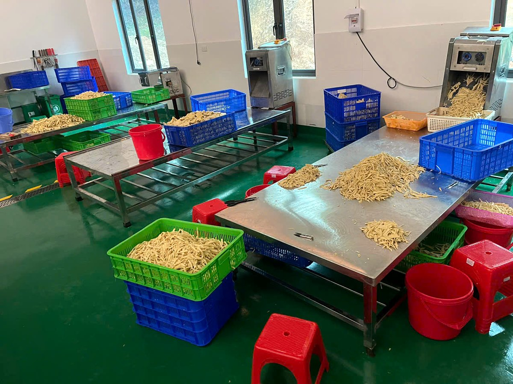

Mỗi thương hiệu đều bắt đầu từ một vùng đất. Với Vũ Điền Farm, vùng đất ấy là Phú Thọ, miền Đất Tổ có Đền Hùng, nơi những triền tre bao quanh xóm làng và búp măng gắn với bữa cơm của bao thế hệ.
Một hợp tác xã trẻ, làm nghề măng
Hợp tác xã Liên minh Phát triển Nông nghiệp Xanh Vũ Điền (gọi ngắn là HTX Vũ Điền) được thành lập ngày 17 tháng 10 năm 2024. Người đại diện theo pháp luật của HTX là bà Vũ Thị Điền.
Xưởng sản xuất của HTX đặt tại Khu 4, xã Đan Thượng, tỉnh Phú Thọ (trước khi sắp xếp đơn vị hành chính năm 2025, địa bàn này thuộc xã Tứ Hiệp, huyện Hạ Hòa). Xưởng nằm trên khu đất khoảng 8.000 m², có khu chế biến măng tươi, khu chế biến măng ủ muối, khu xử lý nước thải và kho thành phẩm.
Vũ Điền Farm là thương hiệu của HTX Vũ Điền. Tên thương hiệu mới, logo mới và bao bì mới được làm trong năm 2026 để khách hàng dễ nhận ra sản phẩm của xưởng trên kệ kho, trong bếp và trên các kênh trực tuyến.
Chỉ hai sản phẩm, làm cho đều tay
Thay vì làm nhiều loại măng, Vũ Điền Farm tập trung vào hai dòng sản phẩm:
- Măng ủ muối – măng được sơ chế và ủ muối tại xưởng. Quán ramen và bếp Nhật gọi đây là nguyên liệu menma. Măng chưa tẩm vị, để mỗi quán tự xả muối và nêm theo công thức riêng. Xem thêm tại trang Măng ủ muối.
- Măng đóng túi – làm từ măng ủ muối của xưởng, được ngâm cho măng nở (khoảng 2,3 lần so với măng ủ muối) rồi hút chân không, đóng túi. Bếp nhà hàng bớt được khâu sơ chế mỗi ngày. Xem thêm tại trang Măng đóng túi.
Cả hai sản phẩm đều bảo quản ở nhiệt độ thường, hạn sử dụng 12 tháng. Hiện xưởng có túi nhà hàng 3–5 kg; túi bán lẻ 300 g và 500 g sắp có.
Tập trung vào hai sản phẩm giúp tổ sản xuất làm quen tay từng công đoạn, để mỗi lô măng đến bếp của khách giống nhau từ lần nhập này sang lần nhập khác.
Điều HTX muốn giữ
Trong hồ sơ giới thiệu của HTX, lời nhắn của ban lãnh đạo được viết thế này:
“Chúng tôi được thành lập với khát vọng xây dựng một doanh nghiệp nông nghiệp Việt Nam phát triển bền vững bằng chất lượng, uy tín và giá trị thực. Chúng tôi tin rằng sự phát triển lâu dài không đến từ những cơ hội ngắn hạn mà được tạo nên bởi niềm tin, sự cam kết và kỷ luật của tất cả những người cùng tham gia trong chuỗi giá trị.”
Câu khẩu hiệu nội bộ của HTX là “Giá trị thật cho Đối tác – Người lao động – Cộng đồng”. Với khách hàng là nhà hàng và nhà phân phối, “giá trị thật” có nghĩa rất cụ thể: giao đúng quy cách, đúng hẹn, nói rõ sản phẩm là gì và dùng thế nào.
Hôm nay Vũ Điền Farm đang làm gì
Xưởng đang cung ứng cho khách hàng Nhật. Bên cạnh đó, HTX mở rộng cung ứng cho thị trường trong nước, trước hết là Hà Nội: quán phở, bún, miến, quán ramen, nhà hàng lẩu, bếp ăn tập thể, căng tin, mối buôn và nhà phân phối thực phẩm.
Liên hệ
Nếu anh/chị đang tìm một nguồn măng ổn định cho bếp hoặc cho hàng bán lại, hãy gọi hoặc nhắn Zalo 0986 564 343, email htxvudien@gmail.com, hoặc xem trang Liên hệ. Vui lòng gọi trước khi ghé xưởng.